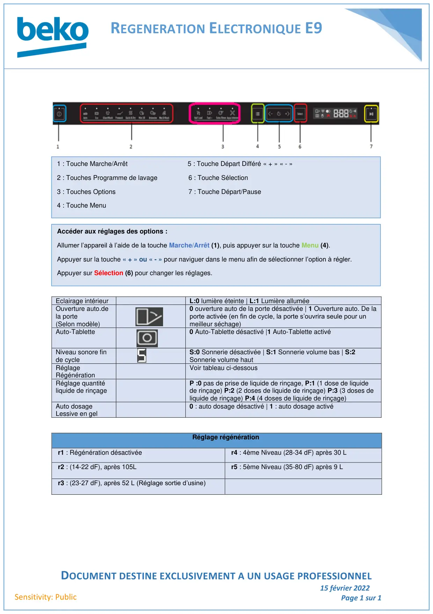

Régénération lave vaisselle E9

REGENERATION ELECTRONIQUE E9DOCUMENT DESTINE EXCLUSIVEMENT A UN USAGE PROFESSIONNEL15 février 2022Page 1 sur 1Sensitivity: PublicEclairage intérieurL:0 lumière éteinte | L:1 Lumière alluméeOuverture auto.dela porte(Selon modèle)0 ouverture auto de la porte désactivée | 1 Ouverture auto. De laporte activée (en fin de cycle, la porte s’ouvrira seule pour unmeilleur séchage)Auto-Tablette0 Auto-Tablette désactivé |1 Auto-Tablette activéNiveau sonore finde cycleS:0 Sonnerie désactivée | S:1 Sonnerie volume bas | S:2Sonnerie volume hautRéglageRégénérationVoir tableau ci-dessousRéglage quantitéliquide de rinçageP :0 pas de prise de liquide de rinçage, P:1 (1 dose de liquidede rinçage) P:2 (2 doses de liquide de rinçage) P:3 (3 doses deliquide de rinçage) P:4 (4 doses de liquide de rinçage)Auto dosageLessive en gel0 : auto dosage désactivé | 1 : auto dosage activéRéglage régénérationr1 : Régénération désactivéer4 : 4ème Niveau (28-34 dF) après 30 Lr2 : (14-22 dF), après 105Lr5 : 5ème Niveau (35-80 dF) après 9 Lr3 : (23-27 dF), après 52 L (Réglage sortie d’usine)1 : Touche Marche/Arrêt 5 : Touche Départ Différé « + » « - »2 : Touches Programme de lavage 6 : Touche Sélection3 : Touches Options 7 : Touche Départ/Pause4 : Touche MenuAccéder aux réglages des options :Allumer l’appareil à l’aide de la touche Marche/Arrêt (1), puis appuyer sur la touche Menu (4).Appuyer sur la touche « + » ou « - » pour naviguer dans le menu afin de sélectionner l’option à régler.Appuyer sur Sélection (6) pour changer les réglages.
1 / 1